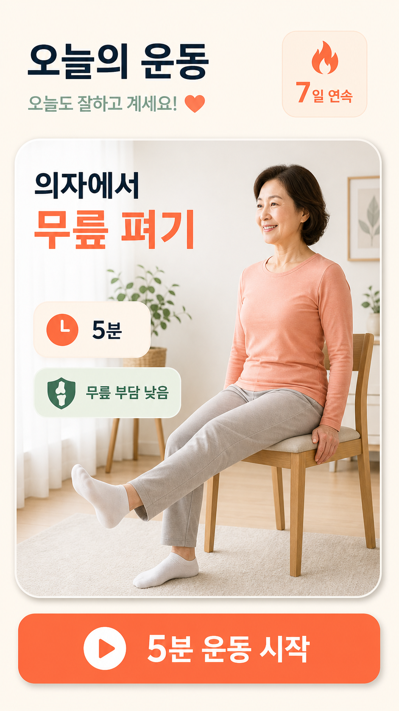
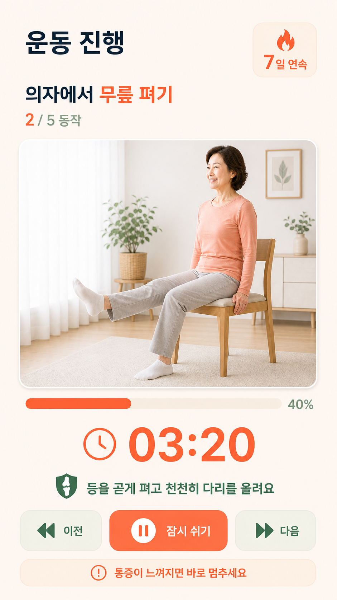
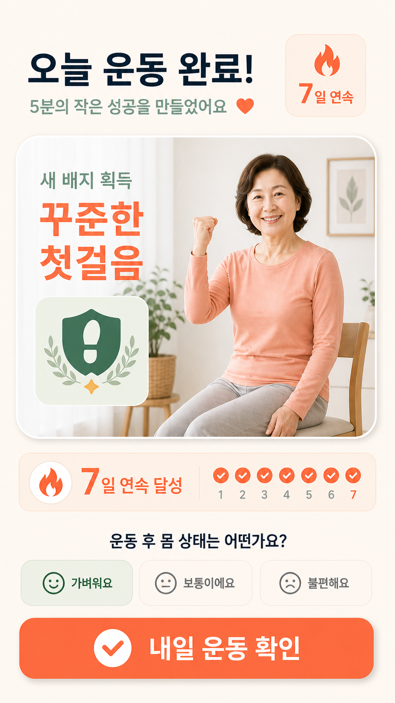

핵심 화면



설계 핵심
결정 부담 최소화오늘 수행할 운동 하나만 크게 제안해 시작 장벽을 낮췄습니다.
안전 우선무릎 부담 수준과 통증 발생 시 중단 안내를 핵심 정보로 배치했습니다.
작은 성공 강화5분 완료, 배지와 연속 기록으로 지속 동기를 설계했습니다.
CODYSSEY PROJECT A · A1-2
혼자 운동을 지속하기 어려운 50대 여성이 오늘 해야 할 저강도 운동 하나를 안전하게 시작하고 작은 성취를 이어가도록 돕는 AI 운동 코칭 앱 UI/UX 시안입니다.


